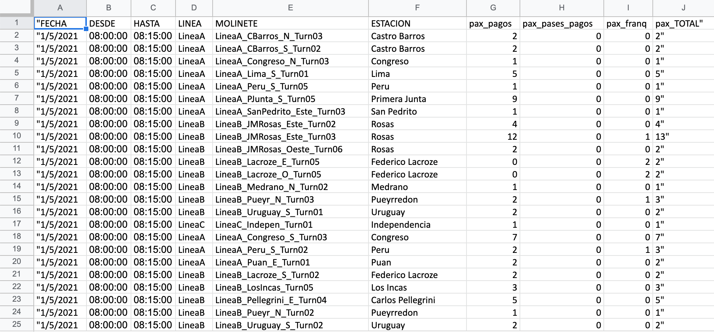

Primer desafío
Desafío: Definición de temáticas del Proyecto Final Desafío: Definición de la Fuente de Información
Proyecto seleccionado:Analizar: Cantidad de pasajeros en cada estación de Subte de la Ciudad Autonoma de Buenos Aires. Industria: Transporte. Temática: Cantidad de pasajeros por molinete en cada estación en rangos de a 15 min discriminando el tipo de pasaje. Objetivo: Determinar si es factible la necesidad de llevar a cabo obras de expansion de las lineas de subte.